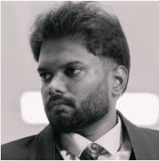

Ashok kumar Nagarajan

Summary
Industrial and Manufacturing Engineering with overall 11 years experiece specialising in NPI, NPD and digital manufacturing. Has lead multiple plant optimisation, process planning and benchmarking projects.
Education
Bachelors in Mechanical Engineering at Part College of Engineering (Anna University) at 2014
Work Experience
Working as Deputy manager at Gainwell Engineering from 2025
Worked as Technical Lead at L&T Technologies and Services from 2023 to 2025
Worked as Engineer and Team Lead at caresoft global from 2015 to 2022
Skills
- Time study techniques(MOST, MODAPTS and UAS)
- Virtual Build, DFX, Design Audit (Teamcenter Vismockup)
- Simulation (Anylogic & Technomatix)
- Design and Layout preparations (Solid Edge & Autocad)
- Animation (Photoshop, Illustrator Blender and Premier Pro)
- Development and Automation (Html, CSS, Javascript, and VBScript)
- Data Analysis (Power BI & Postgres)
Hobbies
Contacts